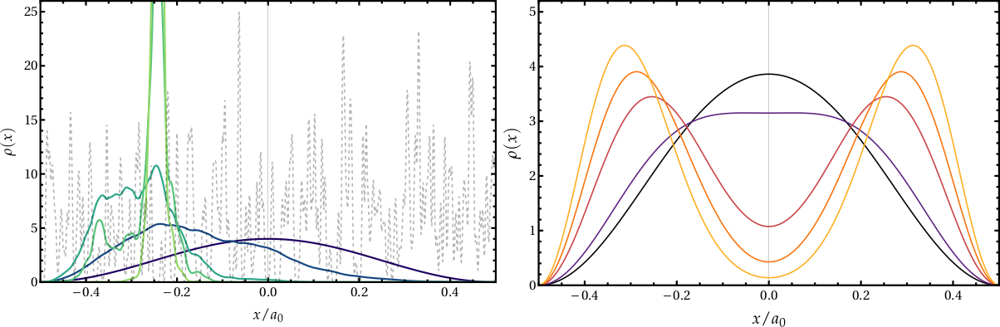
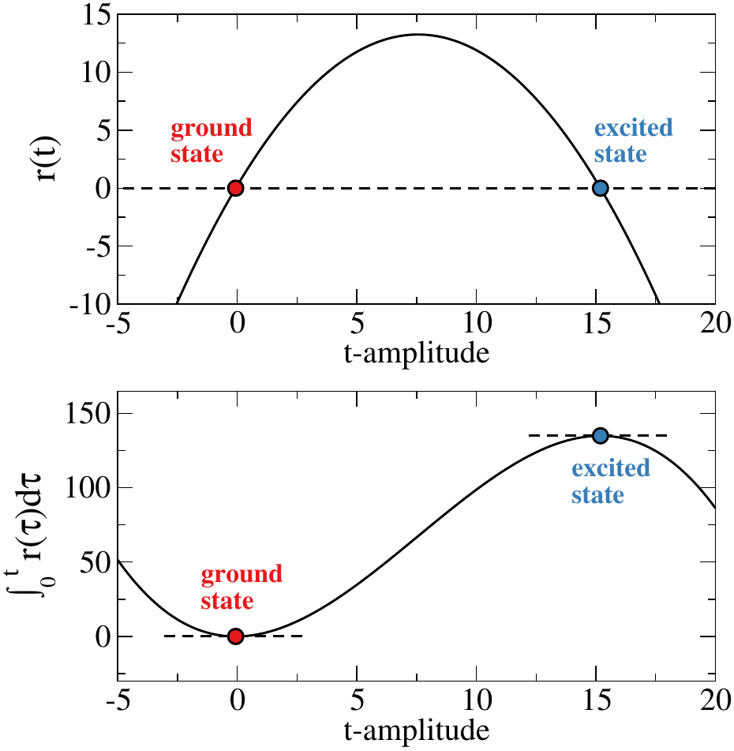
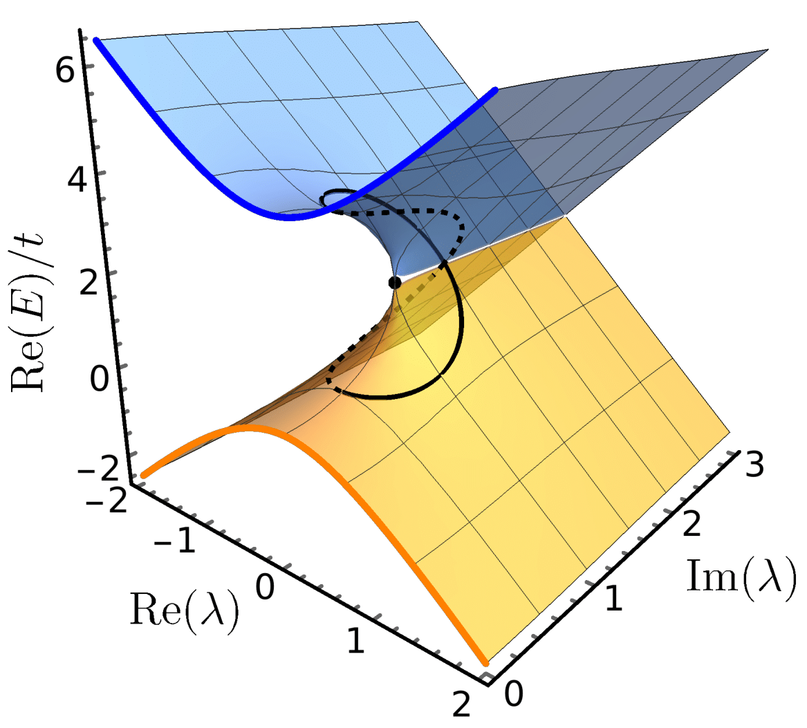

Publications
You can find a more concise list of my publications here.
4. Real space Mott-Anderson electron localization with long-range interactions: exact and approximate descriptions
A. Marie, D. P. Kooi, J. Grossi, M. Seidl, Z. H. Musslimani, K. Giesbertz and P. Gori-Giorgi.
submitted | arXiv

3. Variational coupled cluster for ground and excited states (pdf)

2. Excited states from state-specific orbital-optimized pair coupled-cluster (pdf)
F. Kossoski, A. Marie, A. Scemama, M. Caffarel, and P. F. Loos.
J. Chem. Theory Comput. (Open Access) 17, 4756 (2021). | arXiv

1. Perturbation theory in the complex plane: exceptional points and where to find them (pdf)
A. Marie, H. G. A. Burton, and P. F. Loos.
J. Phys.: Condens. Matter (Open Access) 33, 283001 (2021). | arXiv
